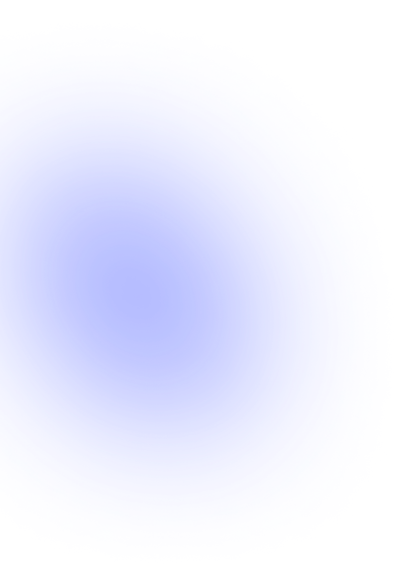
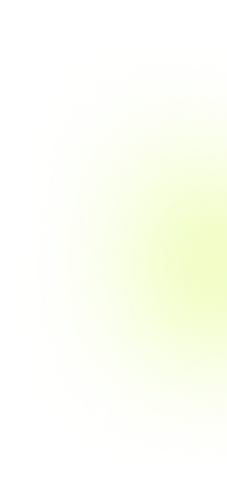
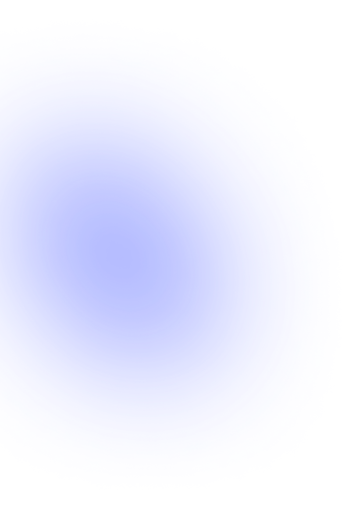
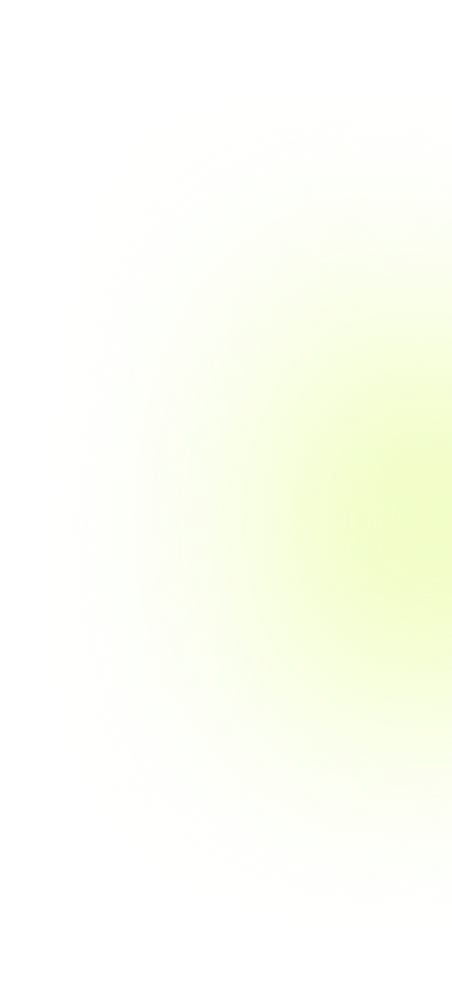
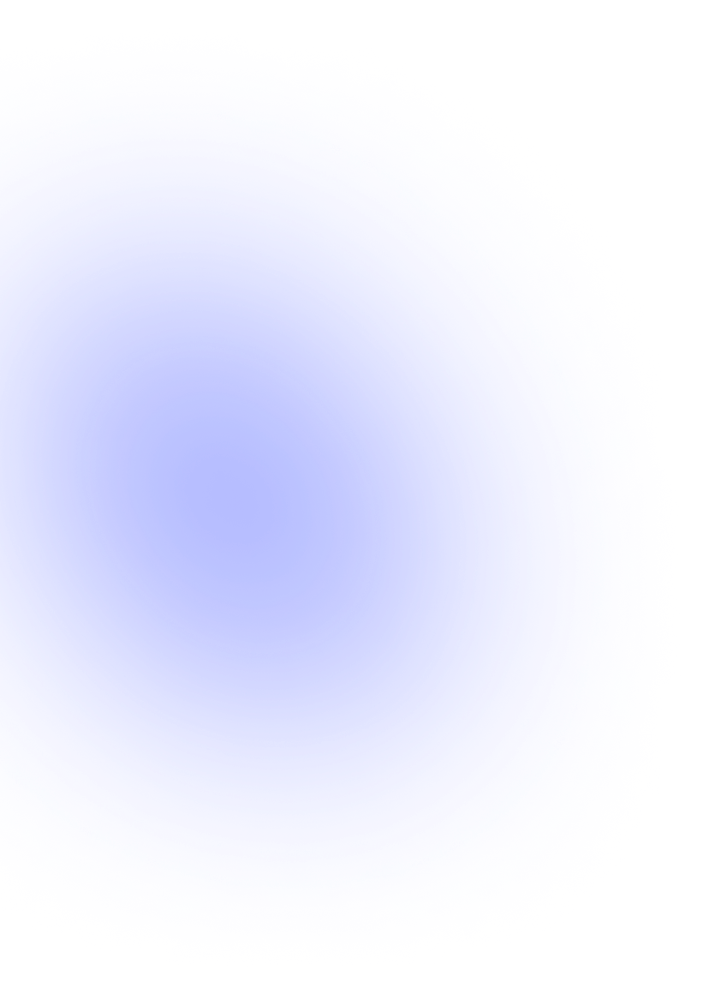
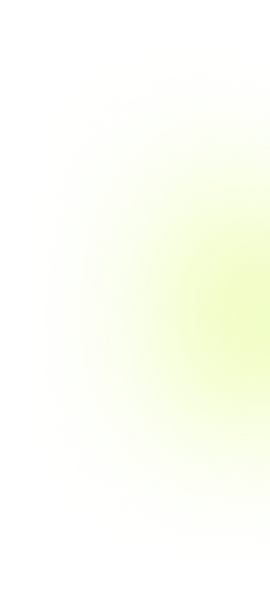
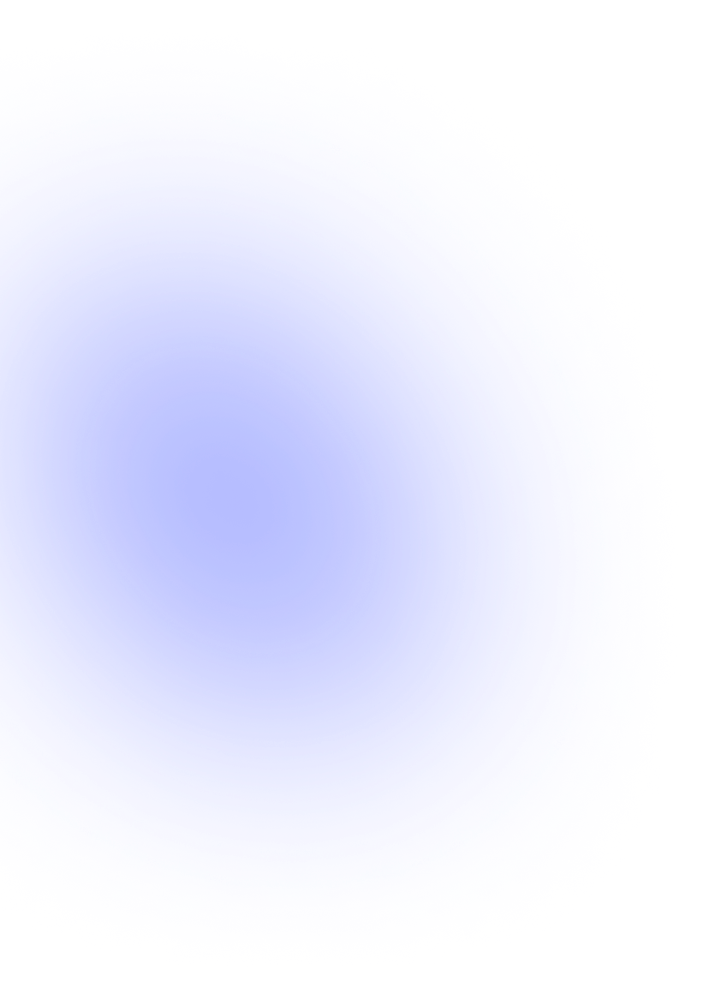
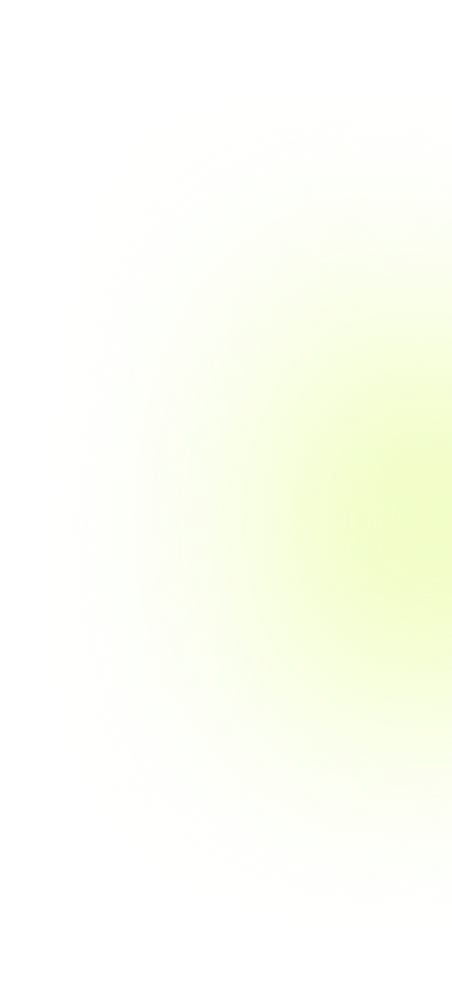

Gagnez du temps.
Visualiser sur une carte l’impact de vos concurrents.
Faites des rapports précis de vos campagnes.
Visualises l’utilisation de twitter dans le monde.
Recherches le username de ton concurrent.
Navigues sur la carte pour voir votre impact à l’international.

Nos données sont issues directement du partenariat avec Twitter, ce qui nous permet d’être le plus précis possible.
Les statistiques sont mises à jour tous les mois par nos équipes.
On peut rechercher n’importe quel tweet tant qu’il existe toujours sur twitter (tant qu’il n’est pas supprimé).
Nos données sont utilisables par chaque utilisateur consultant notre site.
Utilise les icônes plus et moins et ta souris pour parcourir le monde.
Sur la barre de recherche, tu peux rechercher un utilisateur twitter et/ou un #twitter utilise les filtres pour le trouver plus facilement et visualises le resultat sur là carte.